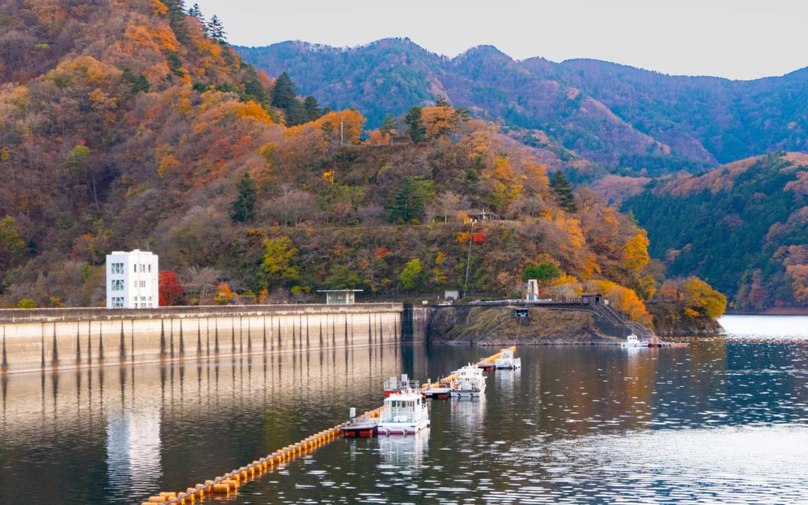
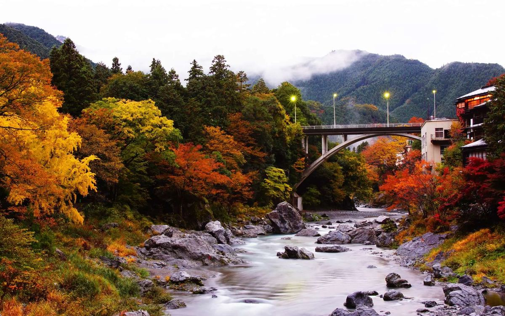
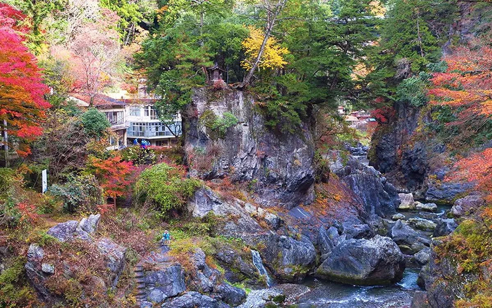
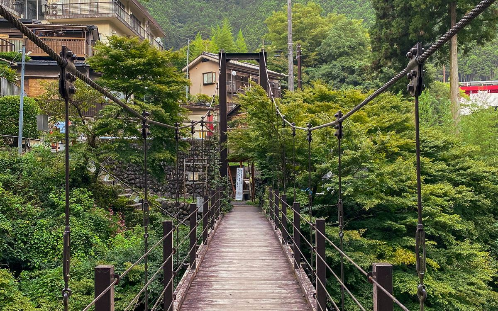

Ba mẹ + Bắp (4 tuổi) + Bơ (1 tuổi) — nhà mình ở Kamihirama, Kawasaki. Ảnh trên: hồ Okutama và đập Ogouchi mùa thu.
⏰ Cập nhật sáng 14/11 — nhà mình đi lúc 08:00 (trễ hơn plan gốc 2 giờ) nên đổi thứ tự: đi 御岳渓谷 trước, ăn trưa ở Hatonosu, để hồ Okutama sang buổi chiều — sáng thứ Bảy mùa lá bãi xe quanh hồ gần như chắc chắn đầy và quốc lộ 411 rất kẹt, buổi chiều khách sáng về bớt thì dễ đậu hơn. Giờ về giữ nguyên: 17:00 bắt đầu về.
🌤 Thời tiết: có mây, cao nhất 17°C, mưa ban ngày 0%. Hoàng hôn sớm 16:37.
🍁 Lá thu: hồ Okutama và núi Mitake đang vào đỉnh lá; các hẻm thấp hơn đang lên màu đẹp.
🕗 Giờ giấc mới: xuất phát 08:00 — 17:00 bắt đầu về từ khu ga Okutama — dự kiến về nhà 19:45–20:15.
Lái ước chừng 1 giờ 50 phút – 2 giờ 15 phút sáng thứ Bảy (sẽ kẹt hơn ngày thường). Bãi 御岳苑地 chỉ 53 xe, nếu đầy thì dùng các bãi tính tiền quanh ga 御嶽. Ăn sáng trên xe hoặc trước khi đi.
Nếu đường lên quá kẹt, cắt ngắn đoạn Mitake: đi thẳng lên Hatonosu ăn trưa sớm, dành thời gian cho hồ buổi chiều.
📍 Mở Google Maps chặng này
Đi khoảng 60 phút quanh cầu 御岳橋 và cây bạch quả lớn trước 玉堂美術館 rồi quay lại, không đi hết tuyến 4km. Địu Bơ là chính, xe đẩy chỉ tiện ở đoạn gần cầu.
Lái ngược lên phía Okutama khoảng 40 phút. Bơ có thể chợp mắt đoạn này.
📍 Mở Google Maps chặng này
Ra cầu 鳩ノ巣小橋 ngắm hẻm từ trên cao 15 phút — ảnh trên là hẻm này mùa lá đỏ đó. Không xuống bãi đá với bé vì đường dốc, chân đi xấu.
Mở 10:30–16:30, từ bãi xe đi bộ vài phút. Gọi kamameshi và yamame nướng muối cho cả nhà chia, Bắp ăn cơm và cá gỡ xương. Trưa thứ Bảy có thể phải chờ — nếu hàng chờ quá dài (trên 20 phút) thì đổi sang quán dự phòng dưới đây.
📍 Mở Google Maps tới quánDự phòng: 釜めし なかい ở 大丹波 — có ghế trẻ em, xe đẩy vào được, bãi xe lớn, thứ Bảy mở tới 19:00.
Dự phòng: 釜めし なかいĐoạn lái khoảng 30 phút này để đúng nhịp ngủ trưa chính của Bơ — đi chậm, đừng dừng giữa đường.
📍 Mở Google Maps chặng nàyĐi trên mặt đập và quanh ふれあい館, đường phẳng, xe đẩy được thoải mái. Buổi chiều khách sáng về bớt, bãi xe dễ thở hơn buổi sáng; nếu bãi 大麦代 vẫn đầy thì thử bãi quanh đập Ogouchi / 水根.
Lưu ý: không đi cầu phao 麦山浮橋 vì đang đóng. Bãi xe cạnh ふれあい館 đang hạn chế một phần vì thi công.

Cầu treo Hikawa Kobashi (ảnh chụp mùa xanh, nay cây đang lên màu thu).
Đi ngắn 25–35 phút qua cầu treo thôi, không đi hết vòng. Lối xuống sông có bậc đá dốc nên địu Bơ, cất xe đẩy trên xe, Bắp nắm tay đi chậm. Hai bé mệt thì bỏ hẳn đoạn này, nghỉ sớm chờ giờ về.
Thay tã, cho bé ăn xế, đi vệ sinh, mua nước cho đoạn đường về. Trời tối từ khoảng 16:40 nên không đi thêm điểm nào nữa.
Chiều thứ Bảy đường về sẽ kẹt, dự kiến 2 giờ 45 phút – 3 giờ 15 phút, về nhà khoảng 19:45–20:15.
📍 Mở Google Maps chặng về nhàGần ga Okutama: thứ Bảy mở 10:00–20:00 (nhận khách tới 19:00), người lớn 1.200 yên/3 giờ, trẻ chưa đi học miễn phí. Nếu chiều còn sức, tắm nhanh 15:50–16:50 rồi 17:00 về cũng kịp.
📍 Mở Google Maps đi onsenNúi Mitake đang đỉnh lá nhưng không nằm trong plan: bãi xe cáp treo 滝本 chỉ 136 xe, cáp khứ hồi 1.400 yên/người lớn, từ ga cáp còn đi bộ dốc 25–30 phút lên đền — tốn 2,5–3 giờ, hai bé sẽ đuối.
Tham khảo: bãi xe cáp treo MitakePlan gốc làm tối 13/11/2026, cập nhật sáng 14/11 theo giờ đi thật 08:00 — chúc cả nhà đi chơi vui 🍁
Nguồn ảnh: hồ Okutama (Tokyo Room Finder), hẻm Hatonosu (GO TOKYO), cầu Hikawa Kobashi (Japan Web Magazine), hẻm Mitake (GOOD LUCK TRIP). Ảnh chỉ để hình dung, cảnh thật tùy thời tiết ngày đi.